Results
Cross-validated performance
Accuracy is reported as 100 − MAPE from walk-forward tests (train on earlier harvests, test on year T).
~91%Weighted accuracy 2021–2025
MAPE 9.4%
MAPE 9.4%
~10%Typical forecast error
technical target
technical target
90%Drought year 2025
MAPE 10.2%
MAPE 10.2%
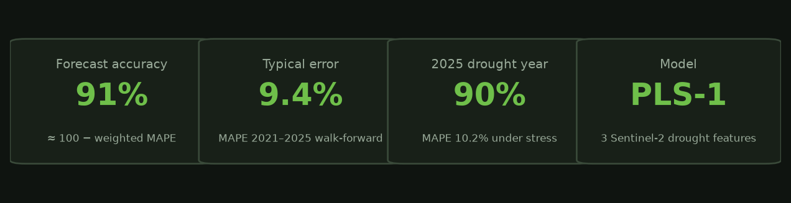
Charts
Forecast diagnostics
Model: PLSRegression (1 component). Features: dry_frac, b04_mean, mid_cire from Sentinel-2 L2A.
Accuracy by harvest year

MAPE by year
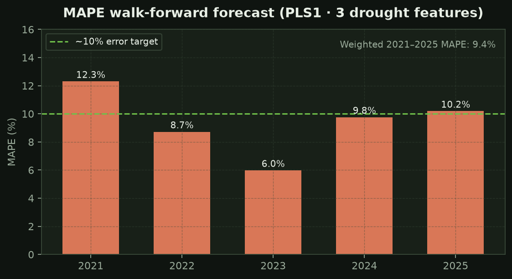
Actual vs predicted · all test years
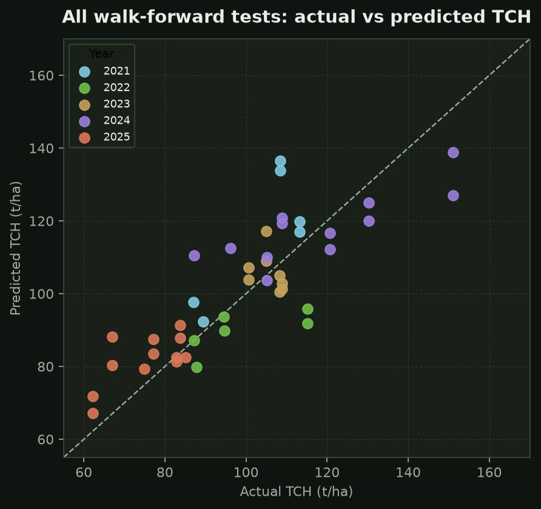
Focus 2025 · drought year
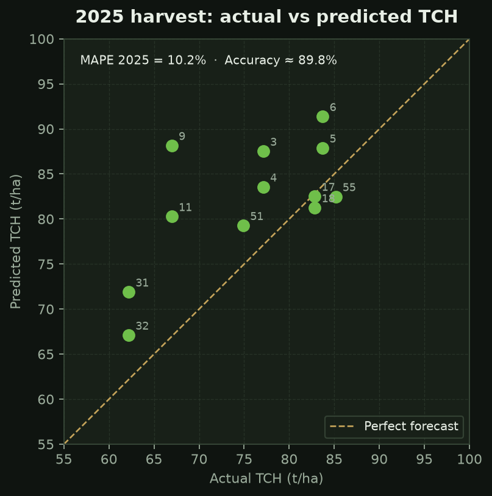
Drought-signal shift 2021–24 → 2025
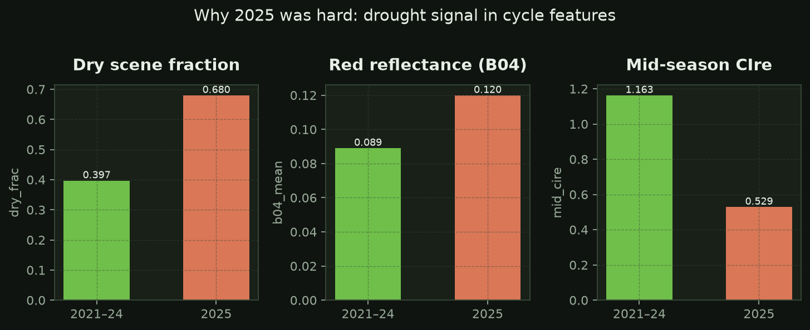
Table
Walk-forward MAPE
| Test year | Train n | Test n | MAPE | Accuracy (100−MAPE) |
|---|---|---|---|---|
| 2021 | 8 | 6 | 12.3% | 87.7% |
| 2022 | 14 | 6 | 8.7% | 91.3% |
| 2023 | 20 | 8 | 6.0% | 94.0% |
| 2024 | 28 | 12 | 9.8% | 90.2% |
| 2025 | 40 | 12 | 10.2% | 89.8% |
| 2021–2025 (weighted) | — | 44 | 9.4% | ~90.6% |
Imagery
Sentinel-2 plot examples
RGB crops (B04–B03–B02) from L2A scenes used to build the drought signal across planting–harvest cycles in north-east São Paulo, Brazil.
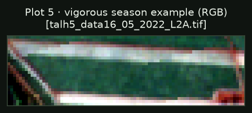
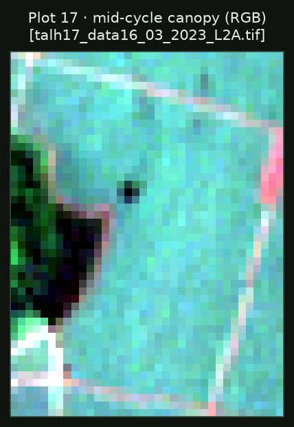
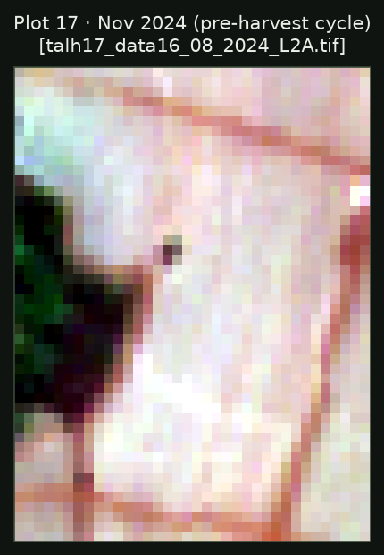
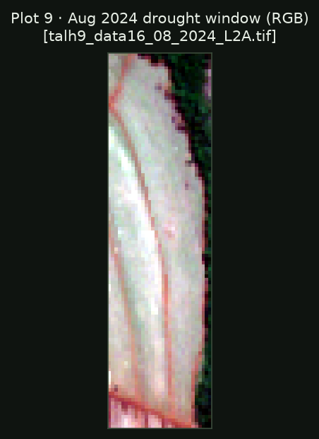
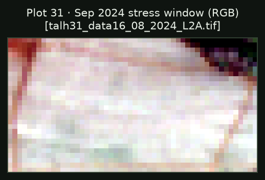
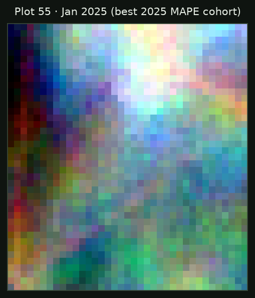
Method
How the forecast is built
- Data. 12 commercial plots, 52 harvest cycles (2017–2025), Sentinel-2 L2A crops per plot.
- Scenes. Deduplicated by
(plot, product_id); sensing time from scene metadata. - Cycle features. dry_frac (share of NDMI<0), b04_mean, mid_cire (CIre at crop age 90–240 days).
- Model. StandardScaler + PLSRegression with one component.
- Validation. Walk-forward by harvest year, not random k-fold.
- Key result. Weighted MAPE ≈ 9.4% → effective accuracy ≈ 90%.
Sources
Data sources
- Plot yields and field metadata. Barbosa et al., sugarcane_dataset_northeast_sao_paulo_state_brazil, Hugging Face dataset, DOI 10.57967/hf/6862 (CC BY-NC 4.0). North-east São Paulo, Brazil; 12 plots and 52 harvest cycles.
- Satellite imagery. Sentinel-2 MSI Level-2A surface reflectance, European Space Agency / Copernicus Open Access Hub. RGB previews use bands B04–B03–B02.